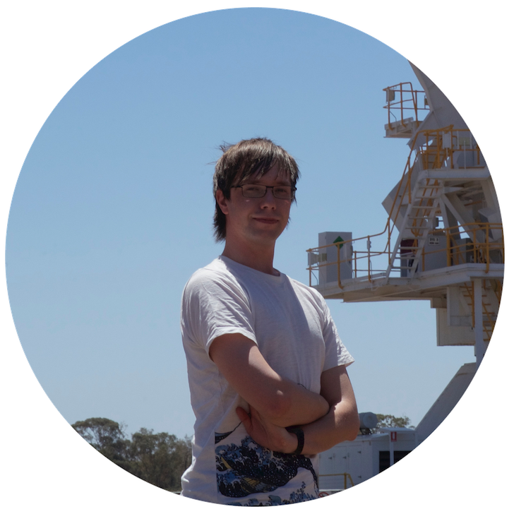

I am an Australian Research Council DECRA Fellow based at Swinburne University's Centre for Astrophysics and Supercomputing. My work primarily involves developing and using Bayesian inference techniques to learn more about the properties of pulsars - rotating neutron stars that emit beams of electromagnetic radiation from their magnetic poles - and their links to links to the mysterious fast radio burst (FRB) phenomena. These FRBs are extremely bright, but vanishingly short-lived bursts of radio waves that come from distant galaxies. I am the priniciple investigator of the Parkes `P574' young pulsar timing project. This multi-decade long project uses Murriyang, the CSIRO 64-m Parkes radio telescope, to monitor 270 energectic 'slow' pulsars.Other interests of mine include follow-up parameter estimation of gravitational-wave events seen by Advanced LIGO and Virgo, and searches for the stochastic gravitational-wave background with pulsar timing arrays.